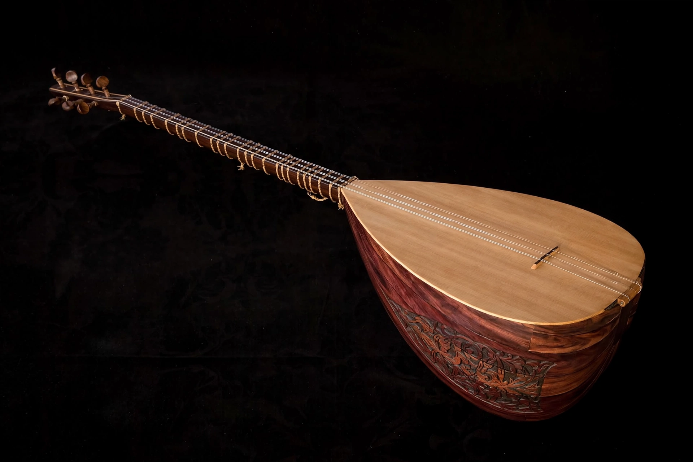

Baglama

| Bağlama | |
|---|---|
| Classification | String instrument (plucked long-necked lute) |
| Region | Turkey, Azerbaijan, Iran, Caucasus, Balkans, Greece |
| Strings | 7, in three courses (3+2+2) |
| Sizes | Cura, bağlama, divan saz |
| Related | Saz, tanbur, bouzouki, dutar, setar |
The bağlama (Turkish: bağlama, pronounced "bah-lah-MAH") is a long-necked plucked lute of the saz family and the best-known folk instrument of Turkey. Its name derives from bağlamak, "to tie", referring to its tied, movable frets. The bağlama is central to Turkish folk music, to the bardic (aşık) tradition, and to the ritual music of Alevi religious ceremonies.
Description
The instrument has a pear- or teardrop-shaped body, traditionally carved from a single block of mulberry wood or built from staves, a long thin neck with tied frets (originally gut, now nylon), and usually seven steel strings arranged in three courses: a group of three and two groups of two. Because the frets are tied, they can be adjusted to give the microtonal intervals of Turkish folk and art music. Common tunings include bağlama düzeni and bozuk düzeni.
Types and playing
The family ranges from the small, high-pitched cura, through the standard bağlama, to the large, deep-toned divan saz and meydan sazı; the bozuk is a medium-large type used especially in Aegean and Central Anatolian styles. The bağlama is played with a thin plectrum (mızrap or tezene, traditionally of cherry bark), with characteristic strumming patterns that mark out complex asymmetric rhythms, or with the fingers in the şelpe technique, in which the hand taps and plucks the strings percussively. Masters of the instrument include Aşık Veysel, Neşet Ertaş, Muharrem Ertaş, and Arif Sağ; the instrument is also played in Azerbaijani, Iranian, Kurdish and Balkan music, and a small version (the baglamas) is used in Greek rebetiko alongside the bouzouki.
Cultural role
For Alevis the bağlama has quasi-sacred status — sometimes called the "stringed Qur'an" (telli Kur'an) — and accompanies deyiş hymns and the semah dances of the cem ceremony. In secular contexts it accompanies folk songs (türkü), epic narrative songs of the aşık bards, and regional dance music. Instruction in bağlama is widespread in Turkey through municipal conservatories and private courses, and it is the instrument most often used to teach Turkish music theory in practice.